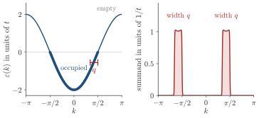

Advanced Quantum Materials 2027 · All lectures · Lecture notes
Session 9. Excitations and Defects in Quantum Materials
9.4a The Fermi sea and the Lindhard function
Which states of a Fermi sea respond to a weak local potential? We will now see that only the pairs with one state on each side of the Fermi surface respond. Their sum is the static Lindhard function (9.4), and at \(q\to0\) and zero temperature it is the density of states at the Fermi level.
\[|n(\lambda)\rangle = |n\rangle + \lambda \sum_{m \neq n} \frac{\langle m|V|n\rangle}{E_n^{(0)} - E_m^{(0)}} \, |m\rangle + O(\lambda^2). \tag{9.3}\]
This is the first-order state of Section 9.3. A perturbation \(V\) mixes the eigenstate \(|n\rangle\) of \(H_0\), of energy \(E_n^{(0)}\), with every other eigenstate \(|m\rangle\), with the matrix element \(\langle m|V|n\rangle\) divided by the energy difference.
To make (9.3) concrete, let us take the case that we will use for most of this session, which is a non-interacting electronic Hamiltonian in diagonal form, \(H_0 = \sum_k \varepsilon(k)\, c_k^\dagger c_k\). Its many-body ground state is the Fermi sea, where every single-particle state with \(\varepsilon(k)\) below the Fermi energy is filled and every state above it is empty. In the same way, \(\langle c_k^\dagger c_k\rangle = n_F(\varepsilon(k))\), which is equal to \(1\) for occupied states and \(0\) for unoccupied states at \(T=0\), and more generally is the Fermi-Dirac function. The set of \(k\)-points at the Fermi energy defines the Fermi surface. This surface will be the most important geometric object in everything that follows, because a small perturbation can only change the states that are close to it. To move an electron from deep inside the Fermi sea to far above it costs too much energy to be relevant at first order.
Now we use (9.3) with a specific perturbation that has a clear physical meaning, which is a local shift of the onsite energy. This is a local change of the chemical potential at one point of the material. The observable that we follow is the change in the local electronic density, \(n(x) - n_0(x)\). We use translational symmetry, we Fourier transform to \(q\)-space, and we insert the perturbed wavefunctions (9.3) into the density operator. After some algebra, where each term comes from a matrix element \(\langle k+q|V|k\rangle\) divided by the energy denominator \(\varepsilon(k)-\varepsilon(k+q)\), with the same structure as (9.3), we obtain the static Lindhard function.
The static Lindhard function of a Fermi sea is
\[\chi_0(q) = \frac{1}{N} \sum_k \frac{n_F(\varepsilon(k)) - n_F(\varepsilon(k+q))}{\varepsilon(k+q) - \varepsilon(k)}. \tag{9.4}\]
Only the pairs where one of the states \(k\) and \(k+q\) is filled and the other is empty contribute, so the response is built at the Fermi surface. At \(q\to0\) and \(T=0\) it is the density of states at the Fermi level, \(D(E_F)\).
The density then changes by \(\delta n(q)=-\chi_0(q)\,v_q\), with \(v_q=\langle k+q|V|k\rangle\) the matrix element of the potential. With the density as the observable \(A\), this is the response \(\chi_A=\partial A/\partial\lambda\) of Section 9.3, so \(\chi_A=-\chi_0(q)\,v_q\), and \(\chi_0\) is the response to the local chemical potential \(-v_q\). The minus sign comes from the denominator \(\varepsilon(k)-\varepsilon(k+q)\) of the mixing (9.3), which is minus the one of (9.4), and it means that a higher onsite energy pushes the electrons away. Like (9.4), this counts one spin. For spinful electrons each spin responds in the same way, and the total density changes by \(-2\chi_0(q)\,v_q\).
The steps From the mixing (9.3) to the Lindhard function (9.4)
The one-particle states are the plane waves \(|k\rangle\) with the energies \(\varepsilon(k)\). A potential with the wavevector \(q\) couples \(|k\rangle\) only to \(|k+q\rangle\) and \(|k-q\rangle\), and we write its matrix element as \(v_q=\langle k+q|V|k\rangle\). By (9.3) the state \(|k\rangle\) takes in \(|k+q\rangle\) with the coefficient
\[a=\frac{v_q}{\varepsilon(k)-\varepsilon(k+q)},\]
and the state \(|k+q\rangle\) takes in \(|k\rangle\) with \(b=v_q^*/(\varepsilon(k+q)-\varepsilon(k))\), so that \(b=-a^*\).
Let us start with the simplest case, a pair where both states are filled. To first order, the density of the state \(|k\rangle+a|k+q\rangle\) has the modulation \(a\,e^{iqx}\) plus its complex conjugate, and the density of \(|k+q\rangle+b|k\rangle\) has \(b^*e^{iqx}\) plus its complex conjugate. Since \(b^*=-a\), the two cancel, and a filled pair does not change the density. The mixing only rotates the filled states among themselves. An empty pair has no electron, so it does not change the density either.
So only the pairs with one filled and one empty state respond. In (9.4) the numerator \(n_F(\varepsilon(k))-n_F(\varepsilon(k+q))\) selects them, since at \(T=0\) it is \(\pm1\) for such a pair and \(0\) for the others. The denominator is the energy difference of the pair, which comes from the mixing (9.3). The function \(n_F\) falls with the energy, so the numerator and the denominator of each term have the same sign, and every term of (9.4) is positive.
The last step is the limit \(q\to0\). The two energies get close, and the numerator becomes \(-n_F'(\varepsilon(k))\,\big(\varepsilon(k+q)-\varepsilon(k)\big)\), so each term goes to \(-n_F'(\varepsilon(k))\) and
\[\chi_0(q\to0)=-\frac1N\sum_k n_F'(\varepsilon(k)).\]
At \(T=0\) the function \(-n_F'(\varepsilon)\) is \(\delta(\varepsilon-E_F)\), and the sum counts the states at the Fermi level per site, which is \(D(E_F)\). For the spinless chain \(\varepsilon(k)=-2t\cos k\) this is \(0.159/t\) at half filling and \(0.225/t\) at quarter filling.
Let us first check (9.4). As \(q\to 0\), we expand both the numerator and the denominator to first order in \(q\) and we obtain \(\chi_0(q\to 0) \to -\sum_k n_F'(\varepsilon(k))/N\). At \(T=0\) this is \(D(E_F)\), the density of states per site at the Fermi level, which is a positive and finite number, as expected. It is the density of states \(g(\omega)\) of (2.16) at \(\omega=E_F\). Equation (9.4) is different from zero only when \(k\) is occupied and \(k+q\) is unoccupied, or the opposite. If both are occupied or both are empty, the numerator vanishes. So the response is built only from states on the two sides of the Fermi surface, as the general argument above predicted.

In Section 9.4b we will see where this function diverges, which is the nesting condition.
The static Lindhard function of a chain is
\[\chi_0(q)=\frac1N\sum_k\frac{n_F(\varepsilon(k))-n_F(\varepsilon(k+q))}{\varepsilon(k+q)-\varepsilon(k)}.\]
At small \(q\) the numerator is nonzero in two windows of width \(q\). There the denominator is about \(v_Fq\). What is \(\chi_0(q\to0)\)?
Show the answers
- A. ✓ True
This is true. The number of states in the windows and the denominator \(v_Fq\) are both proportional to \(q\). They cancel, and what remains is \(1/(\pi v_F)\) for the spinless chain, which is \(D(E_F)\). At half filling \(v_F=2t\), which gives \(0.159/t\).
- B. ✗ False
This is false. The windows shrink, but the denominator shrinks in the same way. A free chain has a finite Pauli-like response \(D(E_F)>0\) at \(q\to0\), which is \(0.159/t\) at half filling, so the ratio does not vanish.
- C. ✗ False
This is false. A divergence of \(\chi_0(q\to0)\) would mean an infinite compressibility. A free electron gas has the finite value \(D(E_F)\), because the number of states in the window decreases together with the denominator.
A spinless chain has \(\varepsilon(k)=-2t\cos k\) and \(k_F=\pi/4\). The static Lindhard function sums
\[S(k)=\frac{n_F(\varepsilon(k))-n_F(\varepsilon(k+q))}{\varepsilon(k+q)-\varepsilon(k)}\]
over \(k\). Each picture shows a curve against \(k\), with the same axes. Which one is \(S(k)\) at \(q=0.3\), in units of \(1/t\)?
Show the answers
- A. ✗ False
This is false. These windows end at the Fermi points \(\pm\pi/2\) of the half-filled chain. At \(k_F=\pi/4\) the Fermi level is at \(-\sqrt2\,t\). The states at \(k=\pi/2-0.15\) and \(k+q=\pi/2+0.15\) have \(\varepsilon=-0.30t\) and \(0.30t\), both empty, so the numerator vanishes there.
- B. ✓ True
This is true. The windows are \(\pi/4-0.3<k<\pi/4\) and \(-\pi/4-0.3<k<-\pi/4\), where one of the two states is below the Fermi level \(-\sqrt2\,t\) and the other is above it. In the middle of a window \(S(k)\) is about \(1/(v_Fq)\), which is \(2.4/t\) for \(v_F=\sqrt2\,t\).
- C. ✗ False
This is false. This is the occupation \(n_F(\varepsilon(k))\) itself, which is one for every filled state with \(|k|<\pi/4\). At \(k=0\) the states \(k\) and \(k+q\) have \(\varepsilon=-2t\) and \(-1.91t\), which are both filled, so the numerator of \(S(k)\) vanishes there.
Take the spinless chain \(\varepsilon(k)=-2t\cos k\) with one site per cell. Show that the density of states per site at the Fermi level is \(D(E_F)=1/(\pi v_F)\), with \(v_F=|d\varepsilon/dk|\) at \(k_F\), and compute it at half filling and at quarter filling.
Solution
Per site the sum over \(k\) is \(\frac1N\sum_k\to\int_{-\pi}^{\pi}\frac{dk}{2\pi}\), so \(D(E)=\int_{-\pi}^{\pi}\frac{dk}{2\pi}\,\delta\big(E-\varepsilon(k)\big)\). At \(E=E_F\) the delta function has two roots, \(k=\pm k_F\), and each one gives \(1/(2\pi v_F)\), with \(v_F=2t\sin k_F\). Together they give \(D(E_F)=1/(\pi v_F)\).
At half filling \(E_F=0\) and \(k_F=\pi/2\), so \(v_F=2t\) and \(D(E_F)=1/(2\pi t)=0.159/t\).
At quarter filling the filled states are \(|k|<\pi/4\), so \(k_F=\pi/4\), \(E_F=-\sqrt2\,t\) and \(v_F=\sqrt2\,t\). This gives \(D(E_F)=1/(\sqrt2\,\pi t)=0.225/t\), which is larger, since the band is flatter there.
These are the values of \(\chi_0(q\to0)\) in (9.4). In a calculation they are the first check of a code for \(\chi_0\), since its value at the smallest \(q\) must be the density of states of the band. For the spinless chain h.get_dos(mode="Green", delta=1e-3) of pyqula, with the Green function and a small broadening, gives the same \(0.159/t\) and \(0.225/t\) at these two energies.